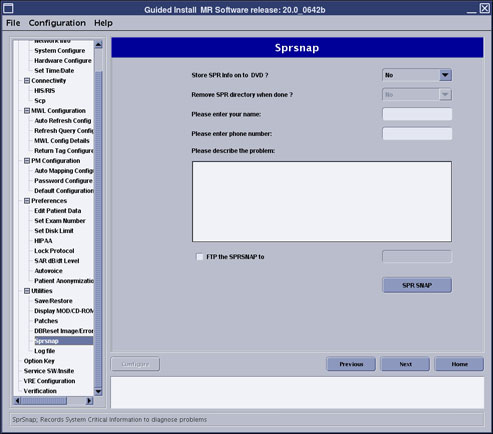
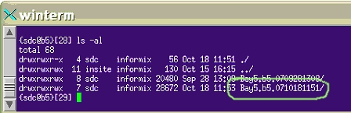

Operating Documentation
Direction 5500113, Rev# 3
Discovery MR450 1.5T Service Methods
Module Version 4.0, Version Date 11/17/08
Operating Documentation |
| Required Persons | Preliminary Reqs | Procedure | Finalization |
|---|---|---|---|
| 1 | Not Applicable | 3-5 | Not Applicable |
SprSnap is a utility that is used to collect error log information, core files, and process status information after a software crash or a significant software problem has occurred on the scanner.
It is best to create an SprSnap as soon as possible and before a reboot after the system crash or problem occurs to ensure that the needed evidence is recovered. The SprSnap can be run from either the Common Service Desktop or from a C Shell terminal.
| NOTE: | Once you complete the SprSnap and have the directory or DVD, you need to create a PQR referencing the SprSnap directory. |
The preferred storage media for the SprSnap data is the site's hard drive. However, you do have the option to save to DVD and mail the disk for analysis. Most SprSnap directories can be transferred to Insite in about an hour whereas the DVD process takes longer. This document contains:
The SprSnap tool creates a new directory: /export/home/snap/site, where site identifies the site name and date and time information. For example, /export/home/snap/Bay5.b15.0710181151, where the SprSnap was performed on the b15 computer on October 18, 2007 at 11:51.
Open the Common Service Desktop, and under the Configuration tab, expand Guided Install and select SPR SNAP. Click the Click here to start the tool link.
Illustration 1: Guided Install SPR SNAP

When the SprSnap dialog window displays (see Illustration 2), fill in the required information:
Select yes or no to store SPR information on DVD.
If you choose to save to DVD, you can select yes or no to delete the SprSnap directory after writing the DVD. If you select no, you need to delete the directory manually (see Deleting an SprSnap Directory)
Enter your name and phone number.
Enter a description of the problem and click [SPR SNAP].
Illustration 2: SprSnap Dialog Window

When the SprSnap directory done message displays, make a note of the directory and click [OK].
Open a C Shell terminal and type sprsnap at the command line.
If you choose to save to DVD, you can select yes or no to delete the SprSnap directory after writing the DVD. If you select no, you need to delete the directory manually (see Deleting an SprSnap Directory).
Enter the required information, including your name, phone number and description of the problem.
Illustration 3: SprSnap C Shell Dialog Window

When the SprSnap done message displays, type ls -al to view and make a note of the new directory (Illustration 4).
Illustration 4: Sprsnap Directory

To view the collected data, navigate to the snap directory at /export/home/snap/site, where site is the name you noted.
| NOTE: | SprSnap data takes up a lot of disk space. After the directory is saved on DVD or FTP'd to the Online Center, delete the SprSnap directory. |
Log in to the host computer as root.
From a C Shell terminal, locate the directory you want to delete in /export/home/snap/site.
Type ls to view the files.
Type rm -r -f directory, where directory is the name of your sprsnap site.
-r deletes the directory recursively, and -f forces all files to be deleted without asking permission.
| NOTE: | If you created a tarball file, you should delete it with the command rm -rf tar zip directory, where tar zip directory is the name of your tarball file. |
Illustration 5: Remove Directory and Tarball

| NOTE: | To avoid deleting the wrong files, do not use wildcards when deleting the SprSnap directory. Each SprSnap has its own directory in /export/home/snap/site. |
No finalization steps.